Streaming · Comunicación · Marketing
Que se vea.
Que se escuche.
Que importe.
Tu evento en directo. Tu marca en conversación. Streaming, comunicación y marketing para lo que quieres contar.
Explorar streaming Explorar comunicación y marketingEl recorrido de la señal
Del evento a la audiencia.
01
Evento
Lo que sucede.
02
Realización
Cómo se cuenta.
03
Emisión
Lo que llega a la audiencia.
Clientes
Instituciones, empresas y marcas.
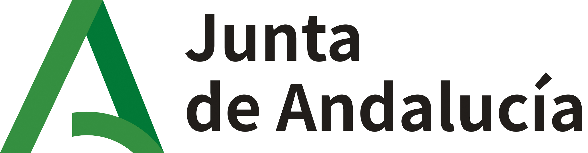
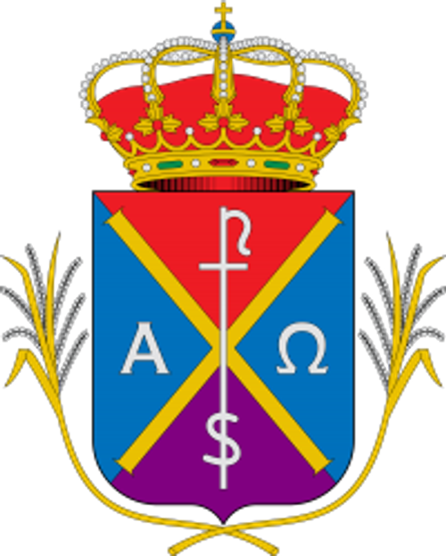
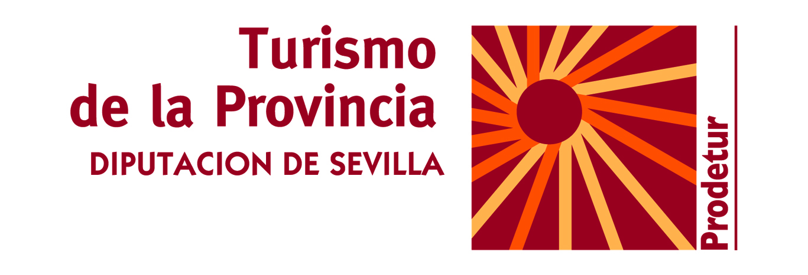
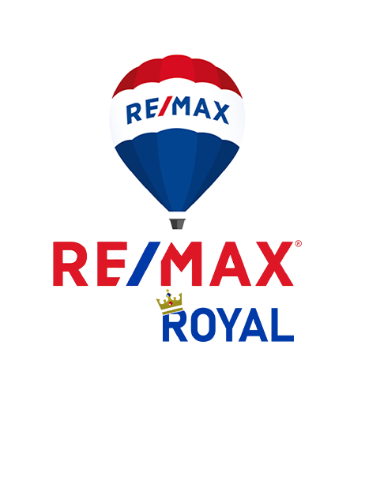
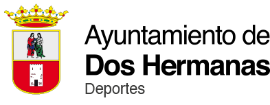
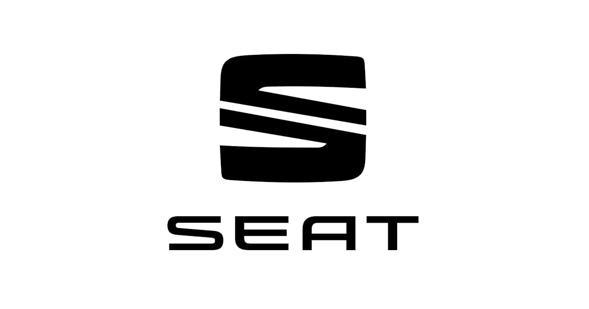
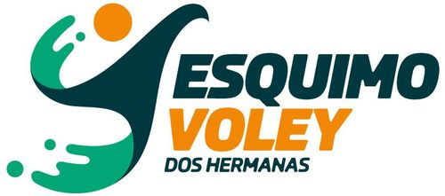
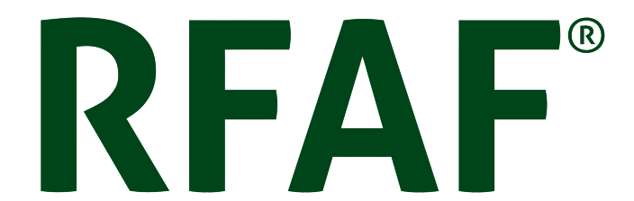
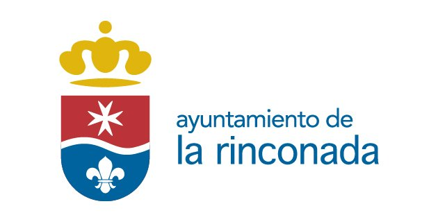
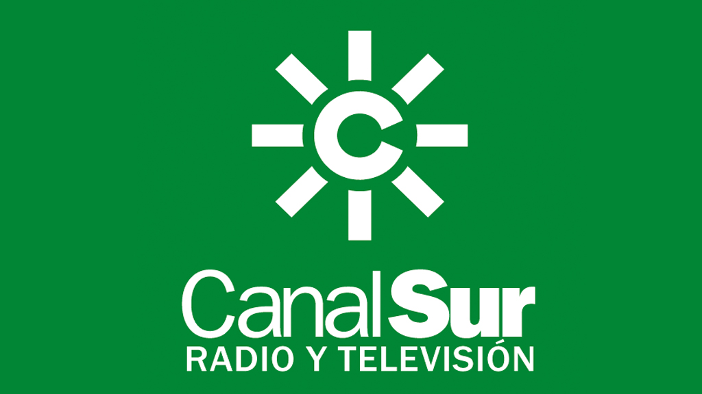
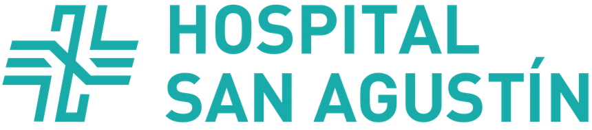
01 / Streaming
El evento,
en pantalla.
¿Qué sucede en tu evento?
¿Quién lo verá?
¿Dónde quieres emitirlo?
Estas preguntas ponen el contenido en el centro de la conversación.
Nuestra
trayectoria.
Streaming, empresas y marcas.
2400
retransmisiones en streaming.
169
empresas han confiado en nuestros servicios.
7
marcas creadas.
02 / El punto de partida
Antes de emitir,
hablemos.
Un proyecto empieza por una conversación. Estas son las tres preguntas que proponemos para preparar la tuya.
¿Qué quieres contar?
El contenido, el formato y la intención del evento.
¿Cuándo y dónde?
La fecha, el lugar y los tiempos que necesitas contemplar.
¿Quién lo verá?
La audiencia y el canal donde quieres que llegue la emisión.
03 / En sus palabras
Así lo
cuentan.
«En La Puebla del Río hemos cambiado el concepto de comunicación gracias a las retransmisiones de Directo Producciones. La creación de nuestra televisión online es un paso hacia el futuro.»
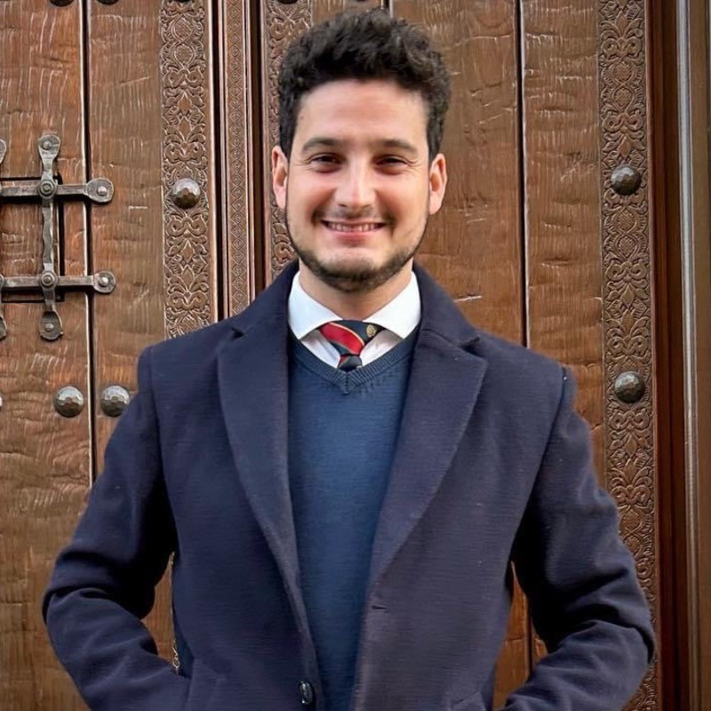
Rafael González
Jefe de Comunicación del Ayto. de la Puebla del Río
«Llevamos en la Hermandad de San Pablo confiando en ellos para retransmitir nuestra Estación de Penitencia y cada año mejor que el anterior.»
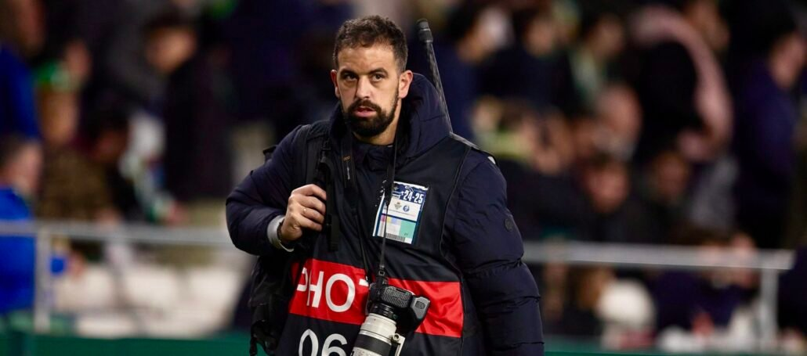
José Luis Contreras
Comunicación de la Hermandad de San Pablo (Sevilla)
04 / Comunicación & marketing
Y después,
la conversación.
Además del directo, exploremos la comunicación y el marketing digital de tu proyecto.
De la idea a la emisión
¿Qué tienes
en mente?
Cuéntanos el evento que estás preparando.
Hablemos de tu proyecto